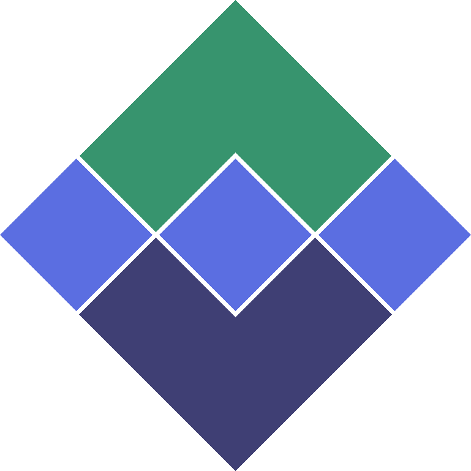

Microsoft의 응답을 기다리는 중...
계정을 누르면 바로 전환돼요.
창 모드에서 적용됩니다. 전체 화면을 켜도 입력한 값은 저장됩니다.
게임 파일을 탐색기에서 봅니다.
바탕화면과 시작 메뉴에서 런처를 열 수 있습니다.
다음 실행 때 배포 파일을 다시 적용합니다.
게임 폴더를 비우고 최신 모드팩을 설치합니다.
현재 게임 폴더를 휴지통으로 보냅니다.
Java 실행과 관련된 설정입니다.
유효하지 않은 선택
게임 실행 전에 Java 실행 파일의 유효성을 검사합니다. 이 모드팩에 맞는 64비트 Java가 필요합니다.
Java 실행 파일의 경로는 보통 bin/javaw.exe로 끝나야 합니다.
런처 버전과 배포 정보를 확인합니다.
GitHub Release
Version -
Updated -